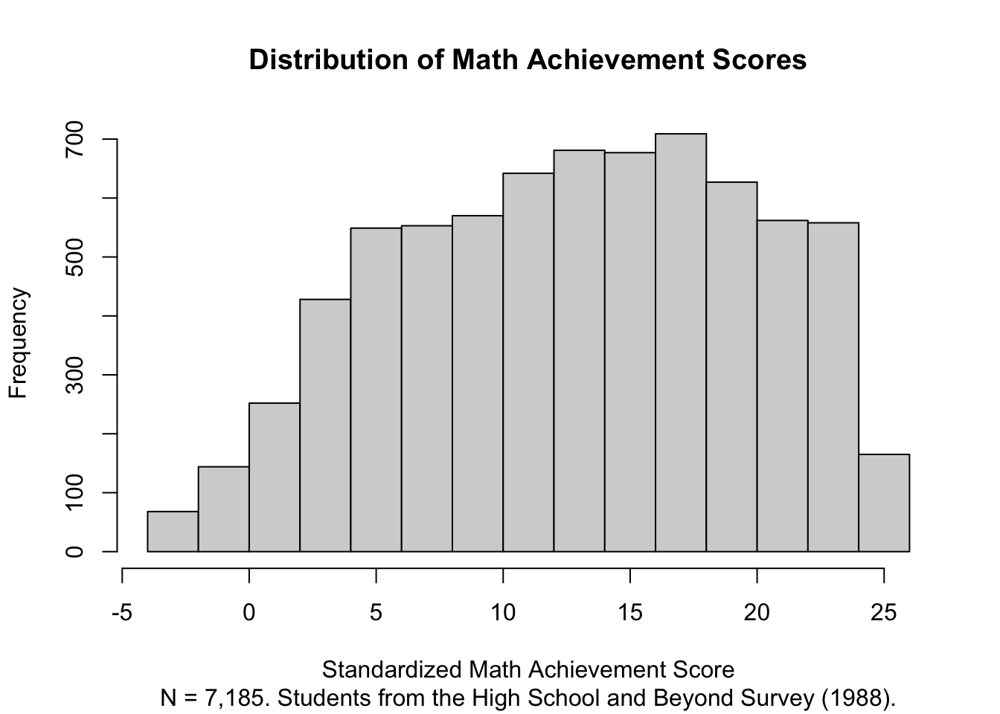
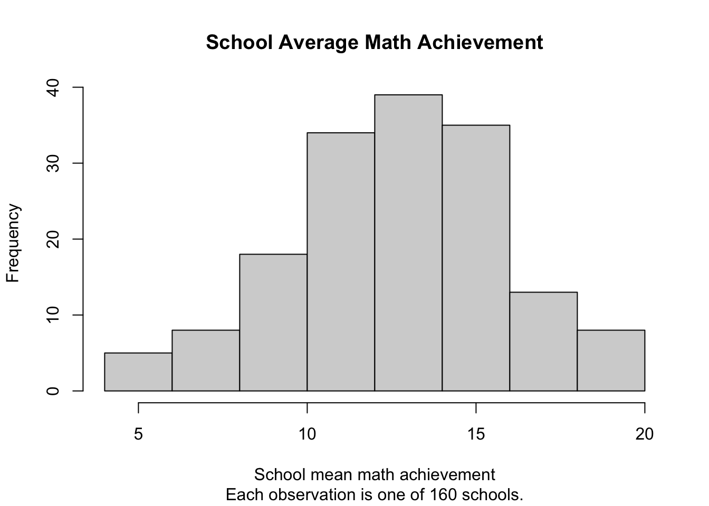

Warning: package 'lme4' was built under R version 4.5.2Warning: package 'lmerTest' was built under R version 4.5.2Warning: package 'performance' was built under R version 4.5.2Data for this chapter: hsbmerged.csv
This chapter uses a larger version of the High School and Beyond dataset, with 7,185 students nested within 160 schools. Students are nested within schools, which is the simplest structure that multilevel modeling is built for. This is the same dataset that Garson uses in Chapter 3, so you can recreate his analysis alongside this one.
Warning: package 'lme4' was built under R version 4.5.2Warning: package 'lmerTest' was built under R version 4.5.2Warning: package 'performance' was built under R version 4.5.2Rows: 7,185
Columns: 11
$ schoolid <dbl> 1224, 1224, 1224, 1224, 1224, 1224, 1224, 1224, 1224, 1224, 1…
$ minority <dbl> 0, 0, 0, 0, 0, 0, 0, 0, 0, 0, 0, 0, 0, 0, 0, 0, 0, 1, 0, 0, 0…
$ female <dbl> 1, 1, 0, 0, 0, 0, 1, 0, 1, 0, 1, 1, 0, 1, 0, 1, 0, 0, 1, 0, 1…
$ ses <dbl> -1.528, -0.588, -0.528, -0.668, -0.158, 0.022, -0.618, -0.998…
$ mathach <dbl> 5.876, 19.708, 20.349, 8.781, 17.898, 4.583, -2.832, 0.523, 1…
$ size <dbl> 842, 842, 842, 842, 842, 842, 842, 842, 842, 842, 842, 842, 8…
$ sector <dbl> 0, 0, 0, 0, 0, 0, 0, 0, 0, 0, 0, 0, 0, 0, 0, 0, 0, 0, 0, 0, 0…
$ pracad <dbl> 0.35, 0.35, 0.35, 0.35, 0.35, 0.35, 0.35, 0.35, 0.35, 0.35, 0…
$ disclim <dbl> 1.597, 1.597, 1.597, 1.597, 1.597, 1.597, 1.597, 1.597, 1.597…
$ himinty <dbl> 0, 0, 0, 0, 0, 0, 0, 0, 0, 0, 0, 0, 0, 0, 0, 0, 0, 0, 0, 0, 0…
$ meanses <dbl> -0.428, -0.428, -0.428, -0.428, -0.428, -0.428, -0.428, -0.42…The describe() function from the psych package gives a quick, high-level summary of every variable in a dataset. It is also useful for your own records. You can paste the output into a document and you have a rough codebook to share with collaborators.
describe(hsb) vars n mean sd median trimmed mad min max
schoolid 1 7185 5277.90 2499.58 5192.00 5254.46 3192.04 1224.00 9586.00
minority 2 7185 0.27 0.45 0.00 0.22 0.00 0.00 1.00
female 3 7185 0.53 0.50 1.00 0.54 0.00 0.00 1.00
ses 4 7185 0.00 0.78 0.00 0.02 0.85 -3.76 2.69
mathach 5 7185 12.75 6.88 13.13 12.91 8.12 -2.83 24.99
size 6 7185 1056.86 604.17 1016.00 1011.71 661.24 100.00 2713.00
sector 7 7185 0.49 0.50 0.00 0.49 0.00 0.00 1.00
pracad 8 7185 0.53 0.25 0.53 0.53 0.27 0.00 1.00
disclim 9 7185 -0.13 0.94 -0.23 -0.16 0.94 -2.42 2.76
himinty 10 7185 0.28 0.45 0.00 0.23 0.00 0.00 1.00
meanses 11 7185 0.01 0.41 0.04 0.02 0.47 -1.19 0.83
range skew kurtosis se
schoolid 8362.00 0.11 -1.25 29.49
minority 1.00 1.01 -0.98 0.01
female 1.00 -0.11 -1.99 0.01
ses 6.45 -0.23 -0.38 0.01
mathach 27.82 -0.18 -0.92 0.08
size 2613.00 0.57 -0.36 7.13
sector 1.00 0.03 -2.00 0.01
pracad 1.00 0.16 -0.89 0.00
disclim 5.17 0.24 -0.16 0.01
himinty 1.00 0.98 -1.04 0.01
meanses 2.02 -0.27 -0.48 0.00Two variables deserve attention before we go further. mathach is our outcome, a standardized math achievement score. schoolid identifies the school each student attends, and it is what defines the clustering in these data.
sector is coded 0 for public schools and 1 for Catholic schools. R has read it as a number, which is fine for arithmetic but misleading for interpretation. It is worth converting it into a factor with meaningful labels, so that model output and plots say “Public” and “Catholic” rather than 0 and 1.
describe(hsb$mathach) vars n mean sd median trimmed mad min max range skew kurtosis
X1 1 7185 12.75 6.88 13.13 12.91 8.12 -2.83 24.99 27.82 -0.18 -0.92
se
X1 0.08ggplot(hsb, aes(x = mathach)) +
geom_histogram(bins = 30, fill = "#1a7a6e", color = "white") +
labs(
title = "Distribution of Math Achievement Scores",
subtitle = "N = 7,185 students from the High School and Beyond Survey",
x = "Standardized Math Achievement Score",
y = "Number of students"
) +
theme_minimal()
A histogram of the whole sample tells us about students in general, but it hides the thing we actually care about. The question that motivates multilevel modeling is whether schools differ from one another. One quick way to see this is to plot school averages rather than individual scores.
hsb |>
group_by(schoolid) |>
summarize(school_mean = mean(mathach, na.rm = TRUE)) |>
ggplot(aes(x = school_mean)) +
geom_histogram(bins = 25, fill = "#1a7a6e", color = "white") +
labs(
title = "School Average Math Achievement",
subtitle = "Each observation is one of 160 schools",
x = "School mean math achievement",
y = "Number of schools"
) +
theme_minimal()
If every school had the same average, this second histogram would be a single narrow spike. It is not. That spread is the phenomenon the null model is about to quantify.
The null model, also called the unconditional model or the empty model, has no predictors at all. It only asks how the total variation in math achievement divides into two pieces: variation between schools, and variation among students within the same school.
The (1 | schoolid) term is what makes this a multilevel model. It tells lmer() to estimate a separate intercept for each school, drawn from a distribution whose variance we want to estimate.
Linear mixed model fit by maximum likelihood . t-tests use Satterthwaite's
method [lmerModLmerTest]
Formula: mathach ~ 1 + (1 | schoolid)
Data: hsb
AIC BIC logLik -2*log(L) df.resid
47121.8 47142.4 -23557.9 47115.8 7182
Scaled residuals:
Min 1Q Median 3Q Max
-3.06262 -0.75365 0.02676 0.76070 2.74184
Random effects:
Groups Name Variance Std.Dev.
schoolid (Intercept) 8.553 2.925
Residual 39.148 6.257
Number of obs: 7185, groups: schoolid, 160
Fixed effects:
Estimate Std. Error df t value Pr(>|t|)
(Intercept) 12.6371 0.2436 157.6209 51.87 <2e-16 ***
---
Signif. codes: 0 '***' 0.001 '**' 0.01 '*' 0.05 '.' 0.1 ' ' 1REML = FALSE?
lmer() can estimate a model two ways, and the choice affects the variance components you are about to interpret.
Restricted maximum likelihood (REML), the default, produces less biased estimates of variance components, particularly when the number of level-2 units is small. If your goal is to report a variance or an ICC as accurately as possible, REML has the edge.
Maximum likelihood (ML), which REML = FALSE requests, is required whenever you want to compare two models that differ in their fixed effects. REML likelihoods computed under different fixed-effect specifications are not comparable, so an anova() comparison of REML-fitted models with different predictors is not valid. R will usually refit them for you, but silently, and it is better to know why.
This book uses ML throughout, for two reasons. Model comparison happens constantly in these chapters, and using one estimator everywhere means the numbers on one page match the numbers on the next. With 160 schools here, and reasonable numbers of clusters in most course datasets, the difference between ML and REML variance estimates is small.
Where the number of level-2 units is genuinely small, chapter 11 works with just 17 schools, REML is worth considering for the final reported model. Say which you used either way.
Two numbers in the Random effects section carry the story. The variance associated with schoolid is the between-school variance, often written \tau_{00}. The Residual variance is the within-school, student-level variance, written \sigma^2.
The intraclass correlation coefficient is the proportion of total variance that lies between schools:
\text{ICC} = \frac{\tau_{00}}{\tau_{00} + \sigma^2}
It is worth computing this by hand at least once, because the formula is the concept. You can pull the variance components directly out of the fitted model rather than typing them in, which avoids transcription errors:
vc <- as.data.frame(VarCorr(model_null))
tau00 <- vc$vcov[vc$grp == "schoolid"]
sigma2 <- vc$vcov[vc$grp == "Residual"]
icc_by_hand <- tau00 / (tau00 + sigma2)
icc_by_hand[1] 0.1793109The performance package will do the same calculation for you, and you should get the same answer:
performance::icc(model_null)# Intraclass Correlation Coefficient
Adjusted ICC: 0.179
Unadjusted ICC: 0.179An ICC of roughly this size tells us that a meaningful share of the variation in math achievement is between schools rather than within them. It also tells us something practical: students in the same school are more similar to one another than two students picked at random from the full sample, which is exactly the condition that makes ordinary regression standard errors too small.
The ranova() function from lmerTest performs a likelihood ratio test comparing our model to one without the random intercept.
ranova(model_null)ANOVA-like table for random-effects: Single term deletions
Model:
mathach ~ 1 + (1 | schoolid)
npar logLik AIC LRT Df Pr(>Chisq)
<none> 3 -23558 47122
(1 | schoolid) 2 -24050 48104 983.92 1 < 2.2e-16 ***
---
Signif. codes: 0 '***' 0.001 '**' 0.01 '*' 0.05 '.' 0.1 ' ' 1A significant result here says that allowing schools to have their own intercepts improves the fit enough to justify the extra parameter. Read this alongside the ICC rather than instead of it. The test tells you whether school-level variance is distinguishable from zero, while the ICC tells you how much of it there is. With 7,185 students you have enough power to detect quite small amounts of clustering, so a significant test on its own is weak evidence that multilevel modeling matters substantively.
It is always worth seeing what we would have gotten by ignoring the clustering entirely.
Call:
lm(formula = mathach ~ 1, data = hsb)
Residuals:
Min 1Q Median 3Q Max
-15.5799 -5.4729 0.3831 5.5691 12.2451
Coefficients:
Estimate Std. Error t value Pr(>|t|)
(Intercept) 12.74785 0.08115 157.1 <2e-16 ***
---
Signif. codes: 0 '***' 0.001 '**' 0.01 '*' 0.05 '.' 0.1 ' ' 1
Residual standard error: 6.878 on 7184 degrees of freedomThe intercept estimates are similar, which is expected in a null model. What differs is the standard error, and that difference is the whole practical argument for multilevel modeling. Ignoring clustering treats 7,185 students as 7,185 independent pieces of information, when in reality students within a school share a great deal. The result is standard errors that are too small and p-values that are too optimistic.
One last point that students routinely get wrong. The fixed-effect intercept in the null model is not simply the mean of all 7,185 students’ scores. It is an estimate of the average of the school means, weighting schools in a way that accounts for how many students each contributes and how much schools vary. With balanced data the two are close. With unbalanced data they can differ, and the multilevel estimate is usually the quantity you actually want.
The null model tells us that schools differ. It does not tell us why. In the next chapter we start adding predictors, at both the student level and the school level, to explain some of the variance we have just found.